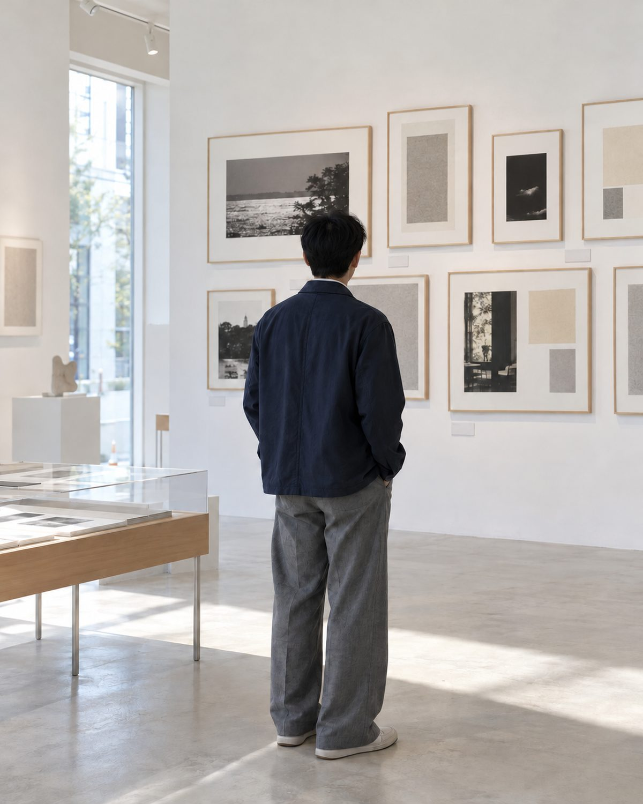
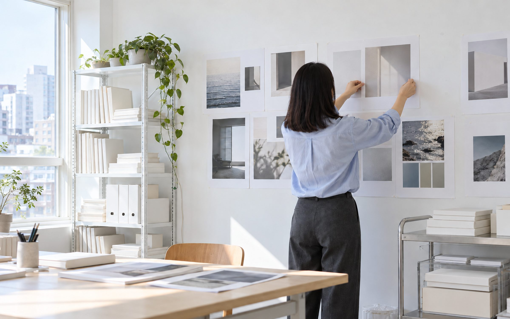
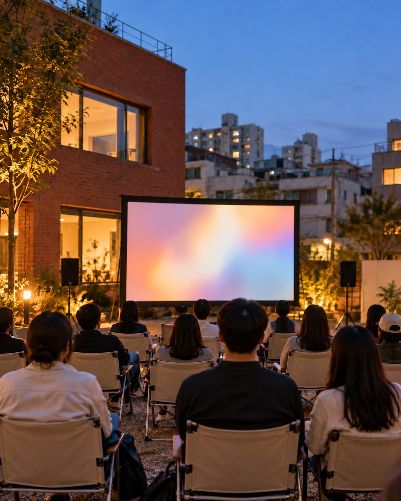
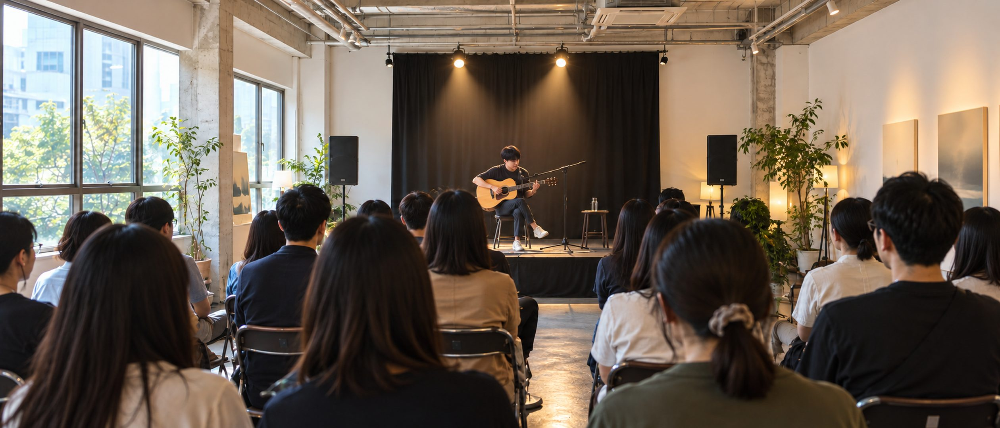

A-AR-01 · 4:5전시 공간·액자 벽 기록전시 기록
전시 팸플릿 · 도록 아카이브
전시가 끝나도 사라지지 않도록, 인쇄물과 기획안을 주제별로 분류해 남깁니다.
 HERO-VIDEO · 16:9 · 배경 전체 영상 자리 (Flow 제작)
HERO-VIDEO · 16:9 · 배경 전체 영상 자리 (Flow 제작)
01 · ABOUT
정거장은 수많은 이동 속에서 잠시 멈추어 서고, 서로 다른 방향을 가진 이들이 만나 다음 목적지로 떠나는 공간입니다. 문화정거장은 문화예술의 기록, 사람의 이야기, 창의적인 영감이 잠시 머물렀다 가치 있게 확장되는 쉼표이자 연결점입니다.
문화예술과 콘텐츠를 아카이빙하고 재해석하여 가치 있는 결과물로 연결합니다. 체계적인 기록과 창의적인 기획이 필요한 모든 이들을 위한 문화예술 콘텐츠를 만듭니다.
02 · WORK
기록이 모이고, 맥락이 다듬어지고, 새로운 가치로 연결됩니다. 세 역할은 같은 무게로 움직입니다.
PLANNER
문화적 영감을 모아 콘텐츠의 방향을 세웁니다.
ARCHIVIST
기록을 수집하고 분류해 오래 남깁니다.

EDITOR
모은 기록을 재해석해 가치 있는 콘텐츠로 엮습니다.
이런 일을 맡습니다
03 · ARCHIVE
전시의 팸플릿과 도록, 현장의 사진, 사람의 인터뷰 — 문화적 가치가 있는 기록을 모으고 맥락을 붙여 남깁니다.

A-AR-01 · 4:5전시 공간·액자 벽 기록전시 기록
전시가 끝나도 사라지지 않도록, 인쇄물과 기획안을 주제별로 분류해 남깁니다.
사람의 이야기
창작자·관계자·지역 주민의 목소리를 텍스트로 수집하고 에디토리얼 해설을 붙입니다.

A-AR-03 · 4:5행사·상영 현장브랜드 서사
흩어진 브랜드의 기록을 모아 기록집·도록·인터뷰집의 형태로 완성합니다.
위 카드는 구성 예시입니다 — 실제 기록으로 교체됩니다. 기록이 쌓이면 독립된 아카이브 페이지로 확장됩니다.
04 · PROJECTS
박물관과 미술관, 웹진과 연구 현장에서 쌓아 온 10년의 기록입니다.
10 YEARS
국공립·사립 박물관과 미술관에서 유물·자료·아카이브 관리, 전시기획, 도록 제작.
연구원 · 큐레이터
3 YEARS
디자인 전문 기업에서 웹진을 창간하고 기획·운영. 국문과 영문 콘텐츠 에디팅.
에디터
ONGOING
다수의 미술 분야 아트 프로젝트와 문화예술 연구 프로젝트에 참여.
기획 · 리서치

A-PJ · 21:905 · NOTES
2026.11
공지
2026.11
소식
—
일정
예시 목록입니다 — 오픈 후 관리자 화면에서 직접 쓰고 고칠 수 있습니다.
06 · CONTACT
기획, 아카이빙, 에디팅이 필요한 모든 이야기를 환영합니다.
카카오톡으로 상담하기